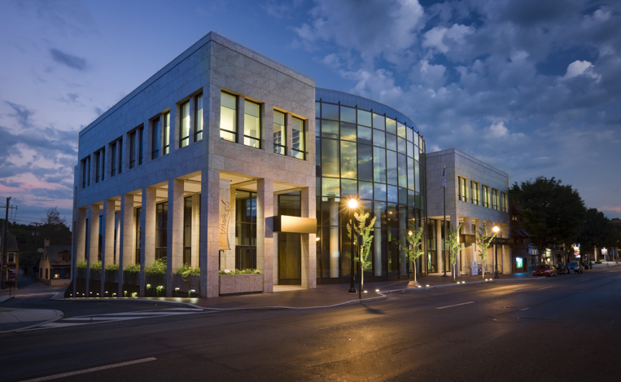

Founded in 2008, the conference has long provided a time and place for the community of technologists to converge, converse and connect. As the technology footprint in Central PA continues to grow, so too grows the need for information and experiences to be shared and discussed among developers and users alike.
This dialogue serves as an integral component in cementing Central PA as a recognized hub of technological innovation. At CPOSC, speakers, attendees and sponsors are all equally relied upon to fuel the fire of that innovation, whether presenting on a topic, asking a question or representing a useful product or service.
CPOSC is held in historic Downtown Lancaster, Pennsylvania.
CPOSC 2017 will be held on the ground floor at The Ware Center at Millersville University in Downtown Lancaster, PA!
Located in the heart of the City’s arts district, The Ware Center at Millersville University Lancaster is the City’s community center dedicated to fostering civic engagement, encouraging collaboration and promoting innovation for the enrichment of the Lancaster region.
With its beautiful glass facade and welcoming presence on Prince Street, The Ware Center provides the Lancaster community with state-of-the-art facilities for a wide variety of performance, learning and cultural events.
The Ware Center at Millersville University 42 N Prince St Lancaster, PA 17603
Someone from the CPOSC team will get back to you as soon as possible.
at Millersville University
42 N. Prince Street,
Lancaster, PA 17603
111 N. Prince Street,
Lancaster, PA 17603
24 E. King Street,
Lancaster, PA 17602